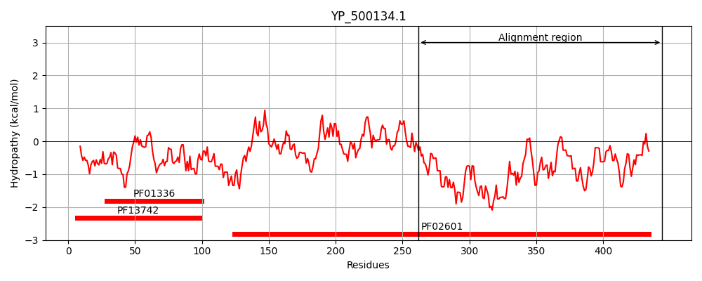
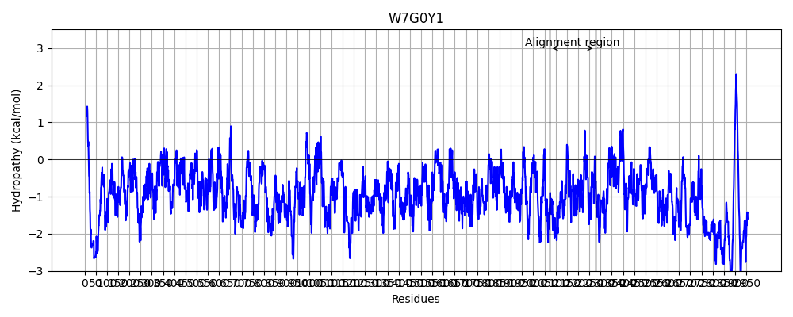
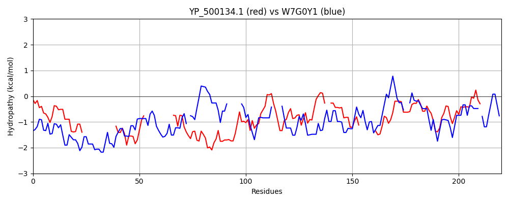

Hit Accession: W7G0Y1
Hit TCID: 1.C.105.2.10
Hit Description: gnl|BL_ORD_ID|20672 gnl|TC-DB|W7G0Y1|1.C.105.2.10 Reticulocyte-binding protein OS=Plasmodium falciparum Santa Lucia GN=PFAG_00579 PE=4 SV=1
Mach Len: 220
e:0.000212
Query TMS Count : 0
Hit TMS Count: 0
TMS-Overlap Score: 0.000000
Predicted Substrates:CHEBI:25367;molecule
BLAST Alignment:
Score: 101 , Bit scores: 43 bits, E-value: 2.1e-04, Alignment length: 220, Percentage identity: 22
Query: 262 DQYELLQQIQQYQFTLTRFIKKHL---------------EQQRKHVEHLSSYY-------------KFKQPTLLYDQQIQRRDDLEKRLKQQIQATFEQQRHRLMLLQQRYNLKALLSSVNQEQQNNLQLTNQLVKLL--NSKILSYKNDLKNK-------VENLNNLSPTNTMLRGYAIVNKKDEVITSTKDLTENDQLTLTMKDGLVDAKVTKVRCNN 444
+ Y LLQQ Y +KK+ E+++ E +SSYY K K+ T ++ I+ + L +K++ QQ + +++ Y+ S +N++++ ++ NQ+++L N I + D++N + N+N++ + +L I+ KK+E + K++ N L K+ ++D KV K C++
Sbjct: 2073 EDYNLLQQYLNYMKNEMEQLKKYKNDVHMDKNYVENNNGEKEKLLKETISSYYDKINNINNKLYIYKNKEDTY-FNNMIKVSEILNIIIKKK------QQNEQRIVINAEYDS----SLINKDEEIKKEINNQIIELNKHNENISNIFKDIQNIKKQSQDIITNMNDMHKSTILL--VDIIQKKEEALNKQKNILRNIDNILNKKENIID-KVIKCNCDD 2278 | Protein Hydropathy Plots: |
|---|
|  |  |
Pairwise Alignment-Hydropathy Plot:
|
|---|
|  |